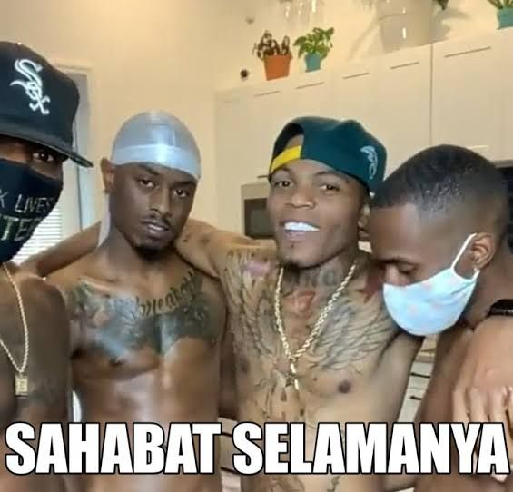

Setel lagunya dulu 👹👉

Hy Mut Marmut, makasih ya udah jd bespren ku slama ini, mks udah mengirim pidio pidio luxu yang menghibur (walau kadang garing si), mksi juga udah denger yappinkanku di sekolahan. selain itu, aku minta maaf ya kalau kadang bercandaanku agak berlebihan, maaf yh kalau misalkan pidio yg km kirim itu kadang ku kirim ulang (aku lupa beneran jir, demi Allah vidio yg km kirim ku tonton semua), intinya aku minta maap deh klo ada salah sm u. Semoga setelah greduwesyen ini besok km bisa masuk di sekolah impianmu, dapet temen yang baik disana, sukses selalu lah pokoknya, godspeedd por yu dah. Pesanku kalau besok udah punya temen-temen baru di sekolah baru, jgn lupain me yh (jangan berhenti kirim pidio luxunya dan APINYA TOLONG JANGAN DIMATIIN). Udah sih gt aja yappingnya, sekali lagi terima kasihhh udah jadi bespren me, semoga kita bisa terus temenan yh pokoknya jgn bosen bosen dah temenan sm aku😸😸😸 PAHAM ✋✋✋✋✋✋✋